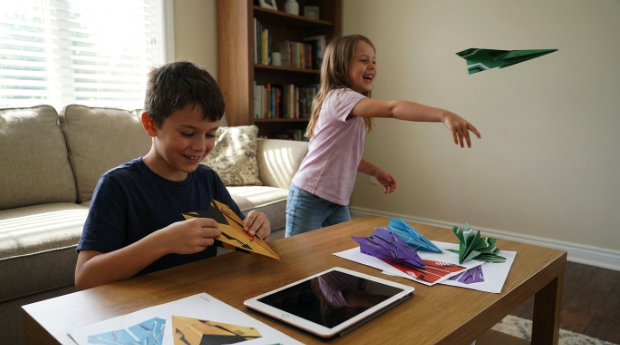
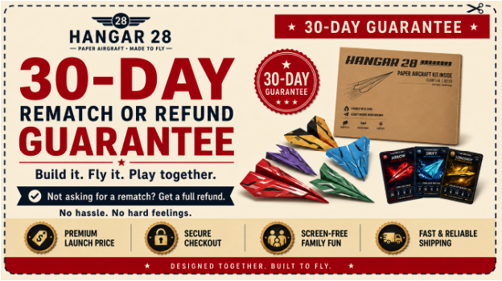

Mark Reynolds
@markRI'll admit I hesitated at the price at first because I thought “they're paper airplanes.” After seeing how much my kids have actually used it though, it was worth every dollar.


"As a worried parent, I wanted something that could pull my kids away from screens without another fight."
Like most parents, I was already worried about how much time my kids were spending on screens.
But what bothered me even more was something much harder to control: what happened once they were online.
It wasn't just videos and games. They were being exposed to opinions, beliefs, trends and ideas I never chose for them — often without me there to explain or put any of it into context.
And that was what really bothered me.
The problem wasn't just how much they were watching. It was what they were watching.
Because some of the content reaching kids today isn't harmless entertainment.
Research has linked exposure to certain types of online content with changes in behavior, anxiety, depression, body image and other mental-health concerns.

Research from Common Sense Media, the American Psychological Association, and the U.S. Surgeon General has raised concerns about the content children are exposed to online and its potential impact on mental health.
I did what most parents do — set limits, turn on parental controls and check their devices whenever I could.
But realistically, I still couldn't control every video, every message, every recommendation or every person they came across.
As a pilot, I'm used to thinking about risk and control. But this was different.
Then I realized something: I might not be able to control everything my kids came across online — but I could give them a reason to spend less time there.
Not by taking the screen away or starting another fight. I needed to find something they would actually want to choose instead.
And if I could do that, maybe I could get back some of the time screens were taking away from us.
I started with the obvious alternatives — new toys, board games, weekend activities and little projects around the house.
Most of them worked for a while.
A new toy might hold their attention for a few days.
A board game would come out a handful of times.
A weekend activity was fun while we were doing it.
Then the interest faded…
Before long, everything started collecting dust.
That was the pattern I kept running into.
It wasn't enough to find something that could pull my kids away from a screen once.
I needed something they would actually want to come back to — and something we could do together.
That's when I started thinking about what already had their attention.
For all the things competing for my kids' attention, there was still one subject that always seemed to pull them in: my job as a pilot.
They wanted to know about the airplanes, how they flew, where I was going and what it was like inside the cockpit. Whenever I talked about flying, they actually paid attention.
That got me thinking…
Instead of buying another toy that might end up collecting dust, maybe I could bring a little piece of aviation home.
So I grabbed some paper and started folding airplanes with them. Nothing complicated, nothing electronic — just paper, a few folds and a simple challenge:
“Whose plane can fly the farthest?”
I expected we'd fold a few planes, throw them around for a while and move on.
Instead, one flight turned into a challenge. They wanted to see if they could get more distance, make a plane fly straighter or beat the last throw.
Before long, we were adjusting the wings, changing little things and comparing what happened each time.
And without really planning it, I found myself teaching them about airplanes while we played — why one design flew farther, why another stayed in the air longer, and how a small adjustment could change the whole flight.

No screens. No batteries. Just a table full of planes and a reason to keep trying.
That was the part I hadn't expected.
I wasn't asking them to put their screens down anymore. They weren't thinking about their screens at all.
We were building, learning, testing and competing — but most importantly, we were doing it together.
For once, I wasn't taking something away from them.
I had found something they actually wanted to choose instead.
The only problem was, I knew a few homemade paper airplanes weren't enough to keep this going forever.
That was when I started to understand why this was working when so many other things hadn't.
It wasn't really about the paper airplanes themselves. It was about what happened around them.
We were talking more, laughing more, competing, learning and spending time together without me having to force any of it.
Every flight gave us something new to work on, whether it was getting more distance, fixing a bad throw or trying to beat the last one.
My son started calling it Flight Time.
And the more we did it, the more I started wondering whether I could turn this simple idea into something my kids would want to keep coming back to.
Once I saw how much my kids were enjoying it, I started thinking about how much more we could do with such a simple idea.
Paper airplanes have been around for more than 100 years, but the basic experience has barely changed: fold one, throw it, and eventually move on.
I didn't want five paper airplanes that just looked different. I wanted five aircraft that actually flew differently.
So instead of starting with the artwork, I started with the flight.
Each aircraft had to have one specific job — speed, glide, distance, stunts or precision.
And I quickly learned that small differences in the folds, wing shape, symmetry, balance — even the paper itself — could completely change how an aircraft flew.
So I kept building, testing and refining, making sure each aircraft had its own purpose and gave us a different challenge to come back to.
I also wanted the planes to feel connected, not like five random designs, so each aircraft got its own identity, mission and collectible card.

That was the beginning of what would eventually become Hangar 28.
Arrow was built for speed. Drift for glide. Longshot for distance. Flip for stunts. And Vector for precision.

One day we could race for distance, another we could see who could stay in the air the longest, and the next we could set up a target and see who got closest.
I also included two sheets of every aircraft.
At first, the second sheet was practical. If something went wrong, we could rebuild it and try again.
But it quickly became one of my favorite parts of the idea.
My kids could build one, I could build the other, and we could compete with the exact same plane.
Same design. Same challenge. No excuses.
And because each aircraft had its own mission and collectible card, the five planes started to feel less like separate paper airplanes and more like a fleet we could build together.
By this point, I knew the kids were excited about Hangar 28.
But I'd bought enough toys over the years to know that Day One excitement doesn't mean much.
The real question was what would happen once the newness wore off and normal life got in the way.
So over the next three weekends, I paid attention to one thing:
That first weekend, I didn't take the screens away or try to turn Hangar 28 into some big family activity. I just left the planes out and watched to see if the kids would come back to them on their own.

By the second weekend, the kids were back into school and I'd had a long week of flying. I was tired, and the weather wasn't great, so going outside wasn't really an option.
Normally, that would have been an easy screen day.
Instead, we turned the living room into our own little airport.
The kids put on my pilot hat, picked their aircraft and started pretending they were running real flights.
A rainy afternoon turned the living room into our own little airport.
The kids put on my pilot hat, picked their aircraft and started pretending they were running real flights.
I even taught them some of the language pilots use when talking to the tower, so one of us would act like air traffic control while the other called in a flight, asked for clearance and tried to land on the target.
Before long, they weren't just throwing paper airplanes anymore. They were playing pilot, learning how aviation worked and building an entire game around it.
That was when I started seeing how much bigger Flight Time could be than the planes themselves.
By the third weekend, I was away on a long-haul flight, so my wife was home with the kids.
She got one of the planes built, but it kept diving almost straight into the ground.
She scanned the QR code and opened the Hangar 28 AI-powered flight assistant. She simply told it what the plane was doing, and the AI walked her through a few adjustments and pulled up the exact tuning video for that aircraft.
After a couple of small changes, the plane was flying properly again, and they were back outside testing it together.

My wife sent me this while I was away on a long-haul flight.
When I got home, they couldn't wait to tell me how Mom did.
That was probably the clearest sign yet that Flight Time had become bigger than something Dad did with the kids.
It had become something our family could keep coming back to — even when I wasn't home.
That was what convinced me.
I wasn't trying to eliminate screens from their lives.
I just finally felt like we had something that could compete with them.
Flight Time gave us a reason to build, learn, compete, use our imagination and actually spend that time together.

After seeing what happened with my own kids, I gave a few sets to friends with kids around the same age and asked them to try it at home.
By this point, I had already spent plenty of money trying to find things my kids would choose over screens. Some were great. Others were exciting for a weekend and then slowly made their way into a closet.
So before I decided what Hangar 28 should cost, I looked at what parents are already paying for the usual options.

If I was going to ask parents to spend real money on Hangar 28, it had to feel like something their kids would actually use again and again — not another toy headed for the closet.
By the time everything came together, Hangar 28 had become a lot more than the paper airplanes I started folding with my kids.
Each aircraft also connected by QR to its own digital page, with step-by-step videos, tuning help and an AI-powered flight assistant whenever they got stuck.
I had spent months refining the aircraft, testing different materials, sourcing the collector cards and working through the Hangar itself until the whole thing felt like something I was proud to hand to another family.
But I kept coming back to why I started this in the first place.
I wanted something my kids would actually choose when a screen was sitting right there beside them — and something that gave us more time together when they did.

And because this is our first launch, I wanted to get Hangar 28 into as many families' hands as possible and let them experience Flight Time for themselves.
If you bought everything in the Hangar 28 set separately, it would cost $106.
So for our launch, we're offering the complete Hangar 28 set for $39.99.
For less than many new video games — and a fraction of what a family can spend on a single day out — you can bring the same Flight Time experience into your own home.
I know every family is different, and I didn't want a parent wondering whether Hangar 28 would actually hold their kids' attention before giving it a chance.

Hangar 28 is still in its first production run, so we're only making a limited number of sets while we get the launch up and running.
If this first batch sells out, we may have to pause orders until the next run is ready.
So if you'd like to bring Flight Time into your home, this is a good time to get your set.
I started Hangar 28 because I wanted something my kids could choose instead of another hour on a screen.
What I ended up finding was something better than I expected: a reason for us to spend more time building, learning, competing and laughing together.
That's what Flight Time became for our family.
And that's what I hope Hangar 28 can bring to yours.
For the launch, you can get the complete Hangar 28 set for $39.99.

Because sometimes the best way to get kids off screens isn't telling them to put the screen down. It's giving them something they'd rather pick up.
I'll admit I hesitated at the price at first because I thought “they're paper airplanes.” After seeing how much my kids have actually used it though, it was worth every dollar.

I've spent $50 on toys my kids played with once and never touched again. They've already gotten more use out of this than half the stuff in their playroom

Absolutely loving this. My son has barely touched his tablet all afternoon 🙌

I was skeptical at first… but honestly the kids got WAY more into this than I expected. I ended up flying them too lol

Had to get another one for my brother's family. His kids wouldn't stop playing with ours when they came over

The “one more throw” thing is so real That's literally what my daughter kept saying last night.

This is what I was telling you about for the kids instead of another video game

Has anyone tried this with two kids? Do they give you enough planes for them to compete with each other?

The cards surprised me. I thought my son would ignore them but now he keeps all of them together and knows which mission goes with every plane.

Wow this actually looks fun. Are 8 year olds able to build these themselves or do parents need to help?

Rainy day here today and these have been flying across my living room for the last two hours I'll take this over YouTube any day.

Wasn't sure about spending $50 on it at first. After one weekend with the kids I completely changed my mind. Worth it just for the time we spent together.

For what we normally spend taking the kids out for one afternoon, this has already given us multiple nights together at home. Easy decision looking back.